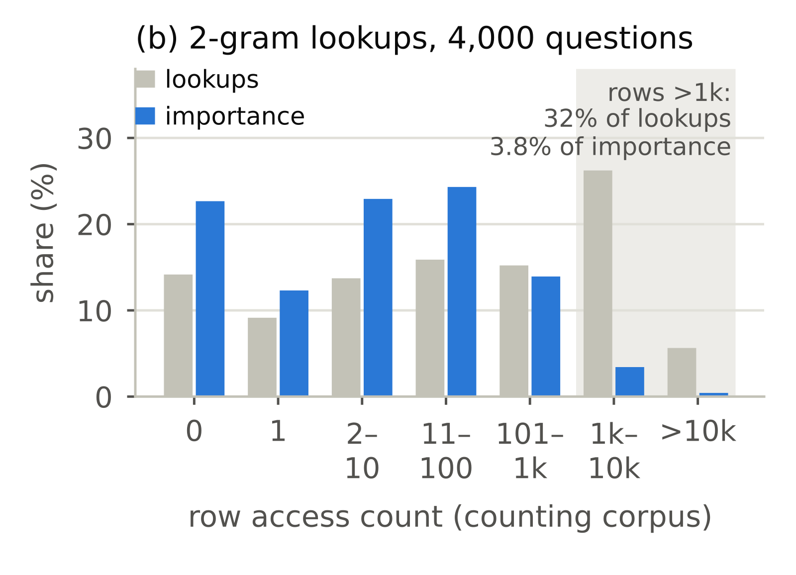
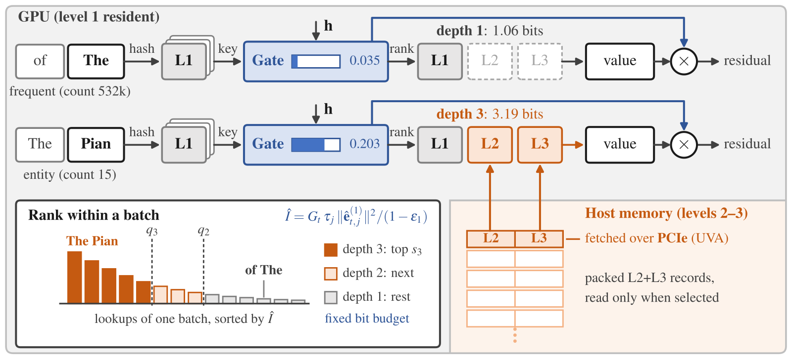
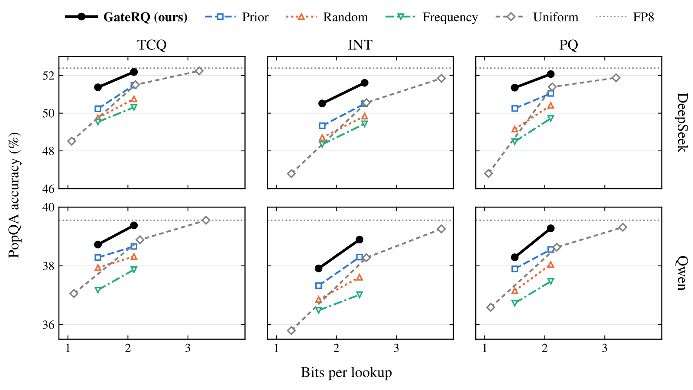

目录 · 8 节
1它到底在解决什么问题？2为什么按访问频率分配会失效？3GateRQ 怎么做：先读 1 bit，再决定读多深4实验：同样读 1.5 bit，谁挑得更准？5省下的显存换来了什么？6我认为它的局限7一个推荐或推理团队可以怎么试8结论给大模型的 n-gram 记忆表做低比特量化时，常规做法是把精度留给访问最多的行，这篇论文发现这条经验在这里会适得其反：按访问频率挑出 41% 的查表结果多给精度，效果比随机挑还差。原因在门控。DeepSeek 的 Engram 这类“条件记忆”层，每个 token 按前面几个 token 组成的 n-gram 去哈希表里取几行向量，再由一个随隐状态变化的标量门控缩放后写进残差流。常见的虚词门控很小，罕见实体名的门控很大，而量化误差正是按门控放大的。作者据此做了 GateRQ（gate-driven residual quantization）：每行存成几级 1 bit 残差码，先读第一级算出门控，再只让门控最大的那部分查表读更深的级。不重训模型，DeepSeek-V4.1-Flash 每张 GPU 上的表从 23.6 GiB 降到 3.0 GiB，长上下文吞吐比 FP8 表放在显存里高 11% 到 31%；每次查表平均读 2.10 bit 时，PopQA 只比 FP8 低 0.2 分。
做推理部署和做推荐 embedding 压缩的人都值得读。推理侧的理由很直接：条件记忆表在 DeepSeek-V4.1-Flash 里占了检查点的 40%，FP8 下 203 GB，怎么压它会是接下来每个部署团队都要面对的问题。推荐侧的理由更有意思：“热门行多给精度”这条老规则隐含了每次访问贡献相同的假设，只要输出前还有一个随上下文变化的缩放因子，这个假设就不成立。核心思想一句话：精度不再是存储行的属性，而是每一次查表的属性，由便宜的 1 bit 码先算出的门控来决定。
它到底在解决什么问题？
先说条件记忆层在做什么。Engram 在两层里各挂一个模块：对每个位置，取以当前 token 结尾的 2-gram、3-gram、4-gram，每种 n-gram 用 8 个不同的哈希函数各查一张表，一共取回 24 行。用多个哈希函数是为了减轻哈希冲突。这些行拼起来，一边经过一个投影得到 key，和当前隐状态算出一个 0 到 1 之间的门控；另一边经过另一个投影得到 value。门控先缩放 value：DeepSeek 把结果直接写进残差流；Qwen 和原始 Engram 则在此基础上加上短卷积分支的输出，再写进残差流。论文测的两个模型（DeepSeek-V4.1-Flash 和 Qwen3.8-Flash-Next）都把残差流拆成 4 条并行的分支，每条分支用自己的 key 投影和自己的隐状态算一个门控，value 则 4 条分支共用，所以每个位置其实有 4 个门控。表本身不参与矩阵乘法，算力开销很小，却装了大量事实知识。把表全部清零，DeepSeek-V4.1-Flash 在 PopQA（一个专问冷门实体的问答集）上掉 36.8 分，约占它总准确率的七成，说明这些表不是可有可无的附件。
问题是这些表太大。在一台 8 卡机器上，FP8 表放进显存要每卡占 23.6 GiB，留给 KV cache 的空间只剩表搬到内存时的九分之一；搬到内存又要锁住大量主机内存。
最自然的办法是量化，可直接压到 1 bit 时 PopQA 掉 3.87 分。损失集中在冷门知识上：最冷门的四分之一实体掉 6.24 分，最热门的四分之一只掉 1.51 分。这说明量化误差不是平均分摊的。
论文里的一个具体问题能说明为什么。问“Who is the author of The Pianoplayers?”，FP8 表答对，1 bit 表答错。下表是第 2 层 2-gram 头上两个位置的情况：
| 位置 | 这一行在 1.15 亿 token 语料里出现的次数 | 门控（一个分支） |
|---|---|---|
| The | 约 53 万次 | 0.035 |
| Pianoplayers 的三个 token | 最多 15 次 | 0.20–0.26 |
如果按推荐系统里的习惯，把精度给访问最多的行，The 这一行会被保护得很好，可它的门控只有 0.035，误差写进残差流前就被缩小了。真正决定答案的是 Pianoplayers 那几行，它们出现太少，按频率排永远轮不到。
为什么按访问频率分配会失效？
作者先把一层的量化损失拆到每一次查表上。一次查表的误差会通过两条路影响输出：一条是改变 key，从而改变门控；另一条是改变 value。实测门控那条路几乎可以忽略：用 1 bit 表和 FP8 表算出的门控，逐位置相关系数在 0.989 到 1.000 之间，只让门控用量化表时 PopQA 基本不动，只让 value 用量化表时掉的分和两者都量化一样多。所以误差几乎全部来自 value。
去掉门控误差后，一次查表对输出的伤害约等于“重要度 × 这一行的相对量化误差”，重要度写成：
其中 是位置 上 4 条分支各自门控的平方和，作者叫它门控能量； 是第 个哈希头的 value 投影把误差放大多少，每个头一个常数； 是取回那一行自身的能量。直觉很简单：门控越大、头越敏感、这一行本身越“响”，量化误差越伤。三项里只有门控能量随上下文变。
拿上面的例子手算一下（只用一个分支的门控，示意）：The 位置门控平方约 0.0012，Pianoplayers 位置约 0.041，相差三十多倍。同样的量化误差落在后者上，伤害大一个数量级。

这张图就是按频率分配失效的直接证据。门控和访问次数在每一层、每种 n-gram、英文中文代码文本上都是负相关。高频行吃亏有两层原因：门控小，行本身的范数也小。
那改成按“这一行的平均门控”排行不行吗？作者说只能补一部分，原因有两个。一是最重要的那批查表多数读的是罕见行，语料里出现太少，平均门控根本估不准，从没出现过的行就占了全部 2-gram 重要度的 23%。二是同一行的门控随上下文剧烈变化：第 15 层读 a good 这一行，在 key to a good holiday 里门控能量是 45.6×10⁻³，在 there is a good and clear reason 里只有 0.8×10⁻³。重要度又高度集中，在 PopQA 上第 15 层前 1% 的查表就占了 54% 的重要度。所以必须按每一次查表的当下门控来决定精度。 Hoot 说

key to a good holiday
- 门控能量
- 45.6×10⁻³
- 头敏感度、行能量
- 同一行，不变
- 按行分配
- 和右栏同一精度
- 按次分配
- 读更深的级
重要度是右栏的约 57 倍。
there is a good and clear reason
- 门控能量
- 0.8×10⁻³
- 头敏感度、行能量
- 同一行，不变
- 按行分配
- 和左栏同一精度
- 按次分配
- 停在第一级
同样的量化误差，伤害小得多。
两栏是第 15 层同一行 a good 的两次查表，门控能量取自论文；按行分配时两次拿到同样的精度，按次分配时只有前一次值得读更深的级。 出处: 论文 §3 重要度公式与 a good 例子（本节正文）
GateRQ 怎么做：先读 1 bit，再决定读多深
这里看起来有个死循环：要知道门控才能决定给多少精度，可门控本身要从取回的行算出来。上一节的观察正好解开它：门控对量化不敏感，用 1 bit 码就能算准。

整个流程分四步：
| 步骤 | 做什么 | 产出 |
|---|---|---|
| 1 | 从显存读每次查表的第 1 级码 | 每行的粗糙重建 |
| 2 | 用粗糙重建算 key 和门控，模型原有门控公式不动 | 每个位置的门控能量 |
| 3 | 用“门控能量 × 预计算的头增益 × 第 1 级重建的平方范数 ÷（1 − 第 1 级平均相对误差）”估计每次查表的重要度，在 batch 内排序 | 每次查表该读到第几级 |
| 4 | 只给排在前面的查表从内存读第 2、3 级，补精 value | 最终写进残差流的值 |
关键分工是：第 1 级负责算门控和排序，更深的级只负责把 value 补精。门控始终用第 1 级算出的那个，排序和注入用的是同一个门控。
为什么要用残差码，而不是直接存一份 1 bit 和一份 3 bit？因为残差码能“读到一半再加精度”。第 1 级用 1 bit 编码这一行；第 2 级用 1 bit 编码第 1 级留下的误差；第 3 级再编码剩下的误差。读到第几级，就把前几级加起来。用最简单的取符号量化算一个二维例子（示意）：行向量是 (0.9, −0.3)，第 1 级的尺度取它的均方根约 0.67，重建成 (0.67, −0.67)；剩下的误差是 (0.23, 0.37)，第 2 级尺度约 0.31，两个分量都为正，重建成 (0.31, 0.31)；两级加起来是 (0.98, −0.36)，离原向量近了很多。论文实际用的是 TCQ（网格编码量化，一种比逐元素取符号更准的 1 bit 编码器），换成整数量化和乘积量化也能用。
为什么能保证预算？每一级在 DeepSeek 上约占 1.06 bit（1 bit 码加上每行一个 FP16 尺度）。作者在每个 batch 里按重要度取分位数：前 41.2% 的查表读到第 2 级，其余停在第 1 级。平均下来约是 1.06 + 0.412 × 1.06 ≈ 1.50 bit。每个 batch 里，作者都让固定比例的查表读到各级，因此每次查表平均读取的逻辑比特数相同。总读取量随查表次数变化。实际传多少字节，还要看数据怎么打包、怎么对齐。这条“边际收益最大的先加精度”的规则是比特分配里的老办法，GateRQ 把分配的单位从表里的行换成了每一次查表。
实验：同样读 1.5 bit，谁挑得更准？
实验要回答的是：在每次查表读的比特数完全相同时，用门控挑是否比其他挑法更好。对照组用同一套残差码、同样的各级比例，只换排序依据：Prior 使用同一个重要度分数，把当前门控能量换成行的预期门控能量，保留头增益和行能量；Random 随机排序；Frequency 按访问次数排序。两个模型分别是 DeepSeek-V4.1-Flash 和 Qwen3.8-Flash-Next（Qwen 的同类层叫 PLE，结构相近），全部不重训。
| 方法 | 每次查表读的 bit | DeepSeek PopQA | DeepSeek 四任务均分 | Qwen PopQA | Qwen 四任务均分 |
|---|---|---|---|---|---|
| FP8 | 8.25 / 8.00 | 52.39 | 64.34 | 39.55 | 59.18 |
| 只读第 1 级 | 1.06 / 1.10 | 48.52 | 63.31 | 37.06 | 58.16 |
| 读满三级 | 3.19 / 3.30 | 52.24 | 64.44 | 39.55 | 59.28 |
| GateRQ | 1.50 | 51.37 | 64.18 | 38.73 | 58.91 |
| Prior | 1.50 | 50.23 | 63.84 | 38.28 | 58.73 |
| Random | 1.50 | 49.75 | 63.68 | 37.94 | 58.50 |
| Frequency | 1.50 | 49.53 | 63.67 | 37.18 | 58.34 |
| GateRQ | 2.10 | 52.18 | 64.46 | 39.38 | 59.23 |
（表中 bit 一列前一个数是 DeepSeek，后一个是 Qwen；四任务是 PopQA、TriviaQA、CMMLU（中文多任务知识评测）和开放域问答 NQ-open。）
1.50 bit 下，GateRQ 在 DeepSeek PopQA 上比按频率挑高 1.84 分，按频率挑反而比随机还低一点。这和前面的分析对得上：频率高的行恰好是门控小的行。两个模型、三种编码器、两档预算一共 12 组设置，GateRQ 在 36 组成对比较里全部显著胜出。
2.10 bit 时 GateRQ 只比 FP8 低 0.2 分，统计上分不出差别，而读满三级要 3.19 bit。这说明多出的那 1 bit 左右大部分花在了不重要的查表上。
作者还用离线指标做了一次消融：离线指标就是上面那个“重要度 × 相对误差”的加权误差。在 1.50 bit 设置下，41.2% 的查表能读第 2 级；如果让所有查表都读到第 2 级，加权误差会降低一个固定的量，按门控挑的那 41.2% 就能拿到其中的 93%，Prior 是 70%，随机 41%，频率只有 26%。再看实测：只读第 1 级和读满两级之间有一段 PopQA 差距，四种挑法分别把这段差距补回了 96%、58%、41%、34%，排序和离线指标一致。这说明前面那个重要度公式虽然是近似，但足够用来排序。
PopQA 之外的差别就小很多：TriviaQA 和 CMMLU 上只有一半多的成对比较显著，NQ-open 上只有一组。原因是这些任务对冷门实体的依赖没那么重，只读第 1 级时本来也掉得不多。

省下的显存换来了什么？
在 vLLM 上跑 32K 输入的长上下文服务，GateRQ 把每卡的表从 23.6 GiB 降到 3.04 GiB，vLLM 报告的 KV cache 容量因此大了约 8.1 倍。在 128 个并发请求下，吞吐从 FP8 显存方案的 349.6 token/s 升到 458.1 token/s，意味着同样的机器能多服务约三成流量。
要看清这个收益从哪来。作者自己写明，吞吐提升来自腾出的 KV cache，不是来自少读了比特：只读第 1 级的方案吞吐是 464.5 token/s，和 GateRQ 基本一样；把 FP8 表整个放到主机内存，吞吐也有 460.1。所以 GateRQ 相对于“FP8 放内存”的真正收益是主机内存：锁定的内存从 188.7 GiB 降到 25.8 到 48.6 GiB，吞吐基本持平。相对于“只读第 1 级”，它的收益是准确率：多花约 26 GiB 内存，把 PopQA 拉回 2.85 分。
表这一侧的计算本身只占一次 prefill 的 1% 左右，8,192 个 token 时从 3.1 ms 降到 1.3–1.6 ms，对端到端没有可见影响。
我认为它的局限
第一，吞吐数字是单次运行。作者明确说服务实验每格只跑一次，而且服务时的四任务准确率还没和准确率实验交叉核对。11% 到 31% 应该看作方向，不能当精确收益。
第二，收益几乎只体现在冷门事实上。TriviaQA 上 36 组比较只有 20 组显著，NQ-open 上只有 1 组。所以如果业务流量主要是常见问答或代码，只读第 1 级就已经拿到全部显存收益，冷门知识上的那点损失可能根本感受不到。
第三，按 batch 取分位数让一次查表读多深取决于同 batch 的其他请求。batch 只有一个 token（解码阶段很常见）时，同一位置的查表共享门控，排序退化成只看头增益和行能量。论文的服务实验是 32K 长输入，prefill 占主导；解码为主的负载下门控排序还剩多少优势，论文没有单独测。
一个推荐或推理团队可以怎么试
第一步，先确认前提。在自己的模型上记录每次查表的门控和行的访问次数，算两者的相关系数。论文里是 −0.02 到 −0.63；如果你的模型是正相关（作者引用的一个 8,200 万 token 训练的小模型就是这样），按频率分配可能仍然合理。
第二步，做只读第 1 级的版本。它不需要任何排序逻辑，就能拿到全部显存收益，先看业务指标掉多少，掉得不多就到此为止。
第三步，掉得多再加第 2 级和门控排序，从 1.50 bit 档开始。判断成败只看两件事：冷门 query 上的指标是否回来，以及主机内存到 GPU 的读取是否在 prefill 中被完全掩盖。
推荐系统里的大 embedding 表也可以借这个思路：如果模型里有类似目标注意力权重的逐次缩放因子，就先检查它和行频率的关系，再决定精度给谁。
结论
一句话：给带门控的查表压缩精度时，该问的是这一次查表有多重要，而这个答案用 1 bit 就能先算出来。
| 维度 | 评价 |
|---|---|
| 问题重要性 | 高。条件记忆表占 DeepSeek-V4.1-Flash 检查点的 40%，部署时必须处理 |
| 方法创新性 | 中高。残差码和边际收益分配都是老工具，新在把分配单位从行换成每次查表，并证明门控能从 1 bit 码算出 |
| 实验证据 | 准确率部分强，两个模型、三种编码器、36 组成对比较全部显著；吞吐部分是单次运行 |
| 工程成本 | 中。不重训，但要写按 batch 排序和从主机内存按需取数的 kernel |
| 是否值得尝试 | 值得。先上只读第 1 级的版本拿显存，冷门知识掉得明显时再加门控补精 |
读完这篇，你觉得
夜读鸮记下了，谢谢你的反馈。
点一下即可，无需登录；再点一次撤回。只统计匿名次数，不记录你是谁。
讨论
欢迎补充实验细节、复现经验或不同看法。需 GitHub 登录。
正在加载讨论…